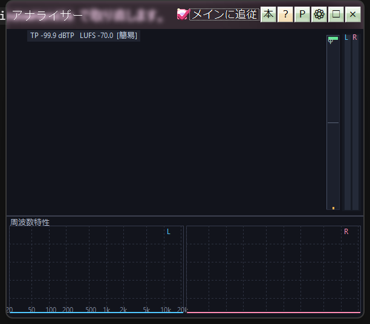

The analyzer is where you look at the sound rather than only hear it. The waveform and meters sit on top, frequency and stereo-field views below. Several display styles are available, so you can settle on one that feels familiar.

Waveform and frequency analyzer
The newest samples start beside the level meters (and the correlation meter), not under them. The visual start of the wave matches the actual samples.
Pick these from right-click → Lower display. Soft 3D draws the same kinds.
On the spectrum view the right-click menu offers overlay, split vertical, split horizontal, 2x2 and 2x4 — useful when you want to look at the channels of a multi-channel source one at a time.
The band positions and gain curve from Equalizer and environmental models can be drawn over the spectrum or RTA. Seeing which peak the slider in your hand is affecting makes EQ work considerably easier.
| Key | Action |
|---|---|
| W | Cycle the upper display kind |
| S | Cycle the lower display kind |
| M | Show or hide the level meters (φ stays) |
| F | Freeze the display |
| P | Toggle peak hold |
| E | Toggle the EQ overlay |
| Space or double-click | Reset peaks |
Hover over the display to read the frequency in Hz, the level in dB and the channel. Correlation-vs-frequency shows φ; phase-vs-frequency shows degrees. On split layouts you get the values for the panel under the cursor.
Right-click → Upper / Lower panel view switches a pane to Soft 3D. Drag to orbit, wheel to zoom, 0 to reset the camera. Wave, RTA and goniometer all have matching 3D views.
The spectrogram jacket tool in The companion tools saves the analyzer view as an image — a nice way to keep the character of a track as a picture.
Drawing runs on an analysis worker thread, so the display stays smooth without interrupting the audio. Acrylic blur is supported here too. In acrylic mode the wave still scrolls from the left of the meters; the meter strip is overlaid rather than scrolled.
Right-clicking a track in the playlist opens the analyzer for it directly. Seeing the music on a piano roll opens the same way.